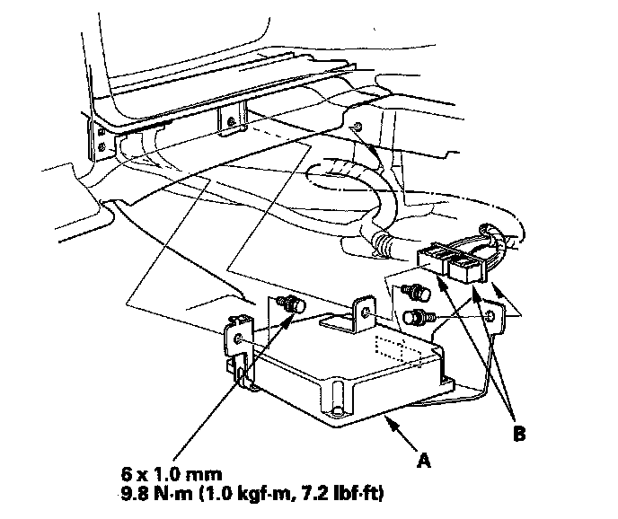

Suspension Control Module: Service and Repair
Active Damper Control Unit Replacement1. Turn the ignition switch OFF.
2. Remove the cargo rear trim panel.
3. Remove the mounting bolts ,and move the active damper control unit (A).

4. Disconnect the active damper control unit connectors (B).
5. Install the active damper control unit in the reverse order of removal.
NOTE: Do not pinch the wire harnesses between the frame and the active damper control unit.
6. Do the memorizing rear suspension full rebound position.
7. Start the engine, then make sure there are no active damper system DTCs with the HDS.
8. Do the DAMPER FORCE OPERATION in the ACTIVE DAMPER SYSTEM INSPECTION MENU with the HDS, then make sure the all four damper units function normally.
9. Test-drive the vehicle, and check that the active damper system indicator does not come on.